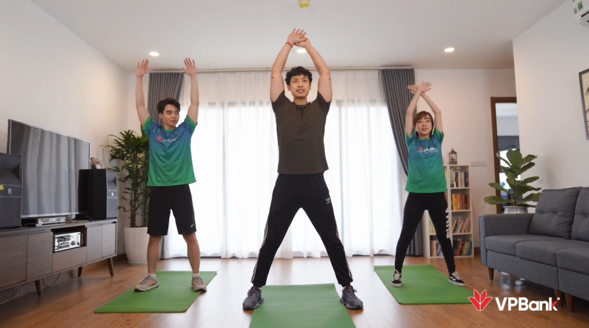
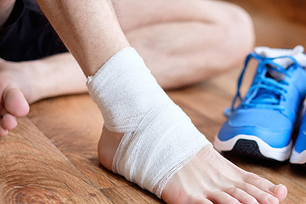

Chuyên gia tư vấn tập thể dục đúng cách tại nhà
PGS.TS.BS Nguyễn Quang Dũng khuyên mọi người tập luyện theo đúng hướng dẫn, lắng nghe cơ thể, không tập quá sức và hạn chế vận động khi bị chấn thương.
Theo PGS.TS.BS Nguyễn Quang Dũng - Phó trưởng bộ môn Dinh Dưỡng và An toàn thực phẩm tại Đại học Y Hà Nội, chấn thương do tập sai cách và chế độ dinh dưỡng không khoa học là những vấn đề thường gặp phải trong quá trình tập luyện của nhiều bạn trẻ khi ở nhà trong mùa dịch. Ông đưa ra một vài lời khuyên giúp duy trì lối sống tích cực và nâng cao sức đề kháng cơ thể.
Tập theo hướng dẫn
Nếu như ở ngoài phòng tập, huấn luyện viên sẽ dựa vào mục đích của mỗi người để lựa chọn bài tập phù hợp thì ở nhà, mọi người sẽ phải tự chọn lựa cho mình. Để làm được điều này, PGS.TS.BS Nguyễn Quang Dũng khuyên mỗi người cần hiểu rất rõ cơ thể của mình rồi từ đó tìm kiếm bài tập phù hợp. Dưới đây là những lưu ý căn bản cho 3 bài tập thường được mọi người ưa chuộng khi tập luyện ở nhà.
Chống đẩy: Đây là động tác thường được các bạn nam sử dụng nhiều nhất. Nó tương đối đơn giản và có khả năng giúp tăng cường cơ ngực, vai và tay sau. Tuy nhiên, để làm đúng động tác và kích thích các nhóm cơ phát triển hiệu quả, người tập cần chú ý một số điều như: tay chống hai bên phải tạo thành hình mũi tên; giữ lưng thẳng, không chùng xuống; không nâng hông quá cao.
Khi xuống thì hít vào và lên thở ra đều đặn, từ từ. Bài tập này không quy định cần phải tập tối thiểu bao nhiêu lần. Bạn tự cân đối theo sức của mình để thực hiện. Lý tưởng nhất là bạn nên thực hiện bài này 3 hiệp, mỗi hiệp 8 lần và nghỉ 15 giây giữa các hiệp.
Gập bụng: Với bài gập bụng, người tập có thể luyện ngay cả khi đang nằm ở trên giường, sàn nhà hay bất cứ vị trí nào thoải mái mà không cần sử dụng đến bất kỳ dụng cụ nào. Giống như chống đẩy, yếu tố giúp người tập thành công khi gập bụng là biết chính xác cách thực hiện. Một số lưu ý khi tập gập bụng gồm: chỉ nên nâng vai lên cách mặt sàn khoảng 7 đến 10 cm thay vì ngồi gập dậy một góc 90 độ để đảm bảo lưng không bị tổn thương. Hai tay chỉ nên đặt hờ sau đầu chứ không kéo đầu về phía trước bởi điều này gây áp lực lên cổ, gây đau và chấn thương cho cổ.
Cardio: Cardio là các bài tập có liên quan tới tim mạch. Đây không phải là một bài tập cụ thể mà là một phương pháp kết hợp hệ thống nhiều động tác khác nhau giúp cơ thể kiểm soát nhịp tim, hỗ trợ quá trình lưu thông máu và tăng cường sự bền bỉ của cơ bắp. Các phương pháp cardio được xem là cách tập thể dục lành mạnh, có thể duy trì lâu dài vì rất có lợi cho sức khỏe bên cạnh mục đích giảm cân, giảm mỡ.
Một bài tập cardio thường kéo dài 20 phút nhưng đốt một lượng calo tương đương chạy bộ 40 - 60 phút. Tuy nhiên, người tập nên khởi động kỹ càng để toàn thân có thể bắt kịp nhịp độ tập luyện. Nếu khởi động qua loa, khi vào tập cường độ cao rất mệt mỏi, mỡ không những không giảm mà khiến cơ thể bị mất sức nhanh chóng.
Người tập có thể tham khảo các bài tại nhà đúng chuẩn cùng tư vấn dinh dưỡng từ Hội Thầy thuốc trẻ Việt Nam trong chương trình "Khỏe x3 vượt qua Covid" tại nhiều nguồn khác.
Cách chăm sóc khi bị chấn thương
PGS.TS.BS Nguyễn Quang Dũng cho biết việc tập thể dục tại nhà trong giai đoạn dịch bệnh nếu thiếu các dụng cụ hỗ trợ như giày, thảm, đai lưng, quần áo co giãn phù hợp hoặc quá vội vàng, hăng say có thể dẫn tới các chấn thương như: rách cơ, bong gân, căng giãn các dây chằng, thậm chí đứt dây chằng, bong điểm bám xương.
"Chấn thương không chỉ có khả năng xảy ra đối với người mới tập mà người đã tập luyện nhuần nhuyễn vẫn có thể gặp các tổn thương do quá tải bài tập hay lặp đi lặp lại ở một khớp nhiều lần. Khi bị chấn thương, ngay lập tức cần cố định khớp cổ chân bằng nẹp, hạn chế tỳ nén lên chân đau, cần chườm túi nước đá lên vùng sưng đau nhiều lần, mỗi lần 10 - 20 phút", ông nói
Bên cạnh đó, người tập cần tiến hành dùng băng thun băng ép cổ chân, ngồi và kê chân cao 2 - 3 giờ mỗi ngày, giúp giảm sưng nề và bầm tím. Ngoài ra, khi bị chấn thương, người tập cũng cần uống thuốc giảm đau, kháng viêm, không nên xoa bóp dầu nóng, thuốc rượu, đắp muối vì sẽ làm bầm tím nhiều hơn, làm dây chẳng khó lành; tuyệt đối không bôi mật gấu, chườm lá vào chỗ sưng đau.
Để hạn chế thấp nhất những chấn thương có thể xảy ra khi tập thể dục tại nhà, mọi người cần bố trí nơi tập có môi trường thoáng khí, không quá nóng, trần nhà cao trên 3m. Ngoài ra, người tập phải khởi động bằng những động tác nhẹ nhàng và hiệu quả; cần làm nóng cơ thể đúng cách bằng việc thư giãn cơ bắp, làm tăng khả năng vận động của khớp trước khi hoạt động thể thao
Theo bác sĩ Quang Dũng, người tập cần lên thời gian biểu luyện tập khoa học, phải có khoảng thời gian nghỉ ngơi giữa các bài tập để tránh chấn thương. Ngoài ra, cần uống đủ nước và xây dựng thói quen ăn uống hợp lý, vệ sinh, đủ dinh dưỡng với thực phẩm giàu canxi như: sữa, tôm, cua... giúp cải thiện sức khoẻ xương, thể chất cơ thể.